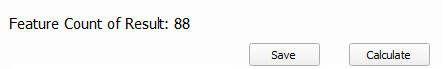

User Guide¶
How to Use Plugin¶
You can choose the layer on Select Layer 1 combo box and Select Layer 2 combo box in input section. Method can be chosen in method combo box. If you choose Wilkerstat Method, merge center check box will activated. If merge center checked, the calculation process will translate geometry to the center of matching geometry.

You can edit threshold, KNN Radius (if you using NN Method), attribute name of score in attribute table of result layer, and result layer prefix name in output section. Threshold is defined in percentile.

After you input all option, you can click calculation button. After calculation be done, save button will enabled. You can save your result to layer in QGIS project with clicking save button.
After calculation excecuted you can preview the result in preview section also before save the result into project.
{kind=link}
{kind=link}
How to build from source¶
This plugin is freeware. You can edit and distribute it freely but you must cite this plugin and Mapcurve (Hargrove et al. 2006) if you are using it to develop another plugin. PyQGIS and OSGeoW environment must be integrated to your IDE if you want develop or build from source. Here some command to integrate that from Command Prompt in Windows:
@echo off path %PATH%;%QGIS_PATH%\bin path %PATH%;%QGIS_PATH%\apps\grass\grass-78\lib path %PATH%;%QGIS_PATH%\apps\Qt5\bin path %PATH%;%QGIS_PATH%\apps\Python36\Scripts set PYTHONPATH=%PYTHONPATH%;%QGIS_PATH%\apps\qgis\python set PYTHONHOME=%QGIS_PATH%\apps\Python37 start "VisualStudioCode for QGIS" /B "%VISUAL_STUDIO_CODE_PATH%\code.exe" %YOUR_PLUGIN_DIRECTORY% %*Here some command for integrating terminal with PyQGIS and OSGeoW in Visual Studio Code:
@echo off call "%QGIS_PATH%\bin\o4w_env.bat" call "%QGIS_PATH%\qt5_env.bat" call "%QGIS_PATH%\py3_env.bat" call "%OSGeo4W64_PATH%\bin\o4w_env.bat" call "%OSGeo4W64_PATH%\bin\qt5_env.bat" call "%OSGeo4W64_PATH%\bin\py3_env.bat" call "%OSGeo4W64_PATH%\bin\gdal-dev-env.bat" call "%OSGeo4W64_PATH%\bin\gdal-dev-py3-env.bat" call "%OSGeo4W64_PATH%\bin\proj-dev-env.bat" @echo on pyrcc5 -o resources.py resources.qrc